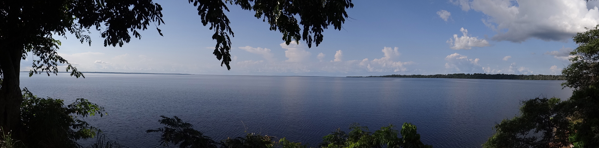

Pourquoi la province de Mai Ndombe ?
Avec trois projets-pilotes REDD + et 20 concessions forestières, la province de Mai Ndombe est à la fois au centre des préoccupations REDD +, et une province phare pour les exploitations forestières industrielles de RDC. La province couvre une vaste zone, équivalente à la taille de l'Angleterre. Elle héberge près d’1,5 million de personnes dont la majorité dépend des ressources forestières pour subvenir à ses besoins fondamentaux. En mai 2015, OpenMaindombe a été lancé pour explorer la façon dont les mécanismes FLEG et REDD + pouvaient faire l’objet d’une seule et unique méthode de suivi indépendant de ces 2 processus.
En raison de l’étendu de la province de Mai Ndombe et du manque d'infrastructures, un suivi efficace nécessite d’établir des liens entre les OIREDD, OIFLEG ainsi qu’avec les communautés locales. Dans cette perspective, FLAG et Moabi ont conçu une méthode expérimentale conciliant le suivi de ces deux mécanismes.
Comment ça marche ?
OpenMaindombe est une communauté d’utilisateurs de données en libre accès, qui héberge une grande variété de cartes, de rapports et de documents liés à la planification de l'utilisation des terres dans la province de Mai Ndombe. Toutes les données cartographiques et les nouvelles peuvent être téléchargées, utilisées et publiées librement, en n’oubliant pas les références appropriées.
Vous découvrirez des informations sur :
REDD+
Projets pilotes REDD +
Zones d'intervention du Programme d'Investissement Forestier
Paysages CARPE
Couches du projet d’ERA-Wildlife Works Carbon
Couches des projets du WWF-RDC en Mai Ndombe
Exploitation forestière industrielle
Concessions Forestières
Pistes d’exploitation forestières
OIFLEG
Agriculture
Evaluation des aires géographiques favorables à la culture du palmier à huile
Concessions agricoles
Communautés
Cartes des villages
Cartes des clans
Technologie
Ce site a été conçu et construit par Moabi. Il est le premier exemple de notre système "OpenMapHub", qui permet à nos utilisateurs de créer des microsites web personnalisés en utilisant des données cartographiques fournies par d’autres utilisateurs. OpenMapHub est une base de données spatiales en accès libre.
Qui sommes-nous ?
OpenMaiNdombe est actuellement mis en œuvre par les ONG FLAG (Forest Legality Advisory Group) et Moabi, en partenariat avec les ONG OGF et OSFAC. EFI (European Forest Institute) a fourni a un appui financier et une assistance technique.
Forest Legality Advisory Group
Organisation de la société civile ayant son siège à Yaoundé au Cameroun, et dont les actions s’étendent au niveau régional (pays d’Afrique Tropicale Humide et Dense), œuvre pour une société africaine dans laquelle les principes de bonne gouvernance sont appliqués dans la valorisation des ressources forestières afin que les pays aient le moyen d’assurer la durabilité de leur développement social, économique et écologique.
FLAG s’investi pour promouvoir les principes de bonne gouvernance dans le secteur forestier en particulier les principes de légalité et transparence. FLAG accompagne les organisations de la société civile (OSC) nationales dans le suivi du respect des lois et s’implique directement dans l’analyse et la diffusion des informations relatives à la gestion forestière au niveau régionale.
Contact
Yaoundé, République du Cameroun - BP 2833
Tel (237) 22 22 18
Email: mailflag@flag-cm.org
Site internet: www.flag-cm.org
Moabi
Moabi est une organisation à but non lucratif aidant les communautés locales et les ONG - petites et grandes – à améliorer la transparence et la redevabilité des acteurs impliqués dans des problématiques environnementales complexes et situés dans des zones reculées ou difficiles d’accès. Nous développons de nombreux outils web accessibles à tous pour collecter, organiser et partager des données sur une grande variété de sujets liés aux ressources naturelles. Nous avons aidé au lancement d’OpenStreetMap - le plus grand projet de cartographie collaborative au monde – pour cartographier des problématiques environnementales dans le bassin du Congo. Moabi offre également des formations techniques. Elle appuie les organisations de la société civile congolaise sur un large éventail de sujets, notamment sur la collecte de données, la cartographie collaborative grâce à des smartphones ainsi que d'autres technologies au service de la transparence. Le but de nos formations est de renforcer les compétences techniques de la société civile pour qu’elles assurent par elles-mêmes le suivi de leurs ressources naturelles.
OGF
L’Observatoire de la Gouvernance Forestière en République Démocratique du Congo, « OGF » en sigle,est une organisation non gouvernementale environnementale de droit congolais créée en septembre 2012 dans le but de pérenniser l’action de l’Observation Indépendante menée par REM (Resource Extraction Monitoring) dans le cadre de projet OI/FLEG (2010-2012). OGF a obtenu un mandat officiel d’exercer comme Observateur Indépendant de mise en application de la loi forestière et gouvernance en signant un protocole d’accord en 2013 avec le Ministère en charge des forêts(MEDD). Ce mandat court jusqu’en 2017. OGF a la vocation d’exercer ses activités sur toute l’étendue de la République Démocratique du Congo. Toutes ses activités concourent à la lutte contre l’exploitation illégale des bois et la promotion de la gestion durable des forêts.
Contact details
12 étage, BCDC, Kinshasa-Gombe, République Démocratique du Congo
téléphone : (243)999910795
e-mail : ogfrdc@gmail.com
site web : www.ogfrdc.cd
OSFAC
OSFAC est issu des assises organisées en 2000 à Libreville ayant réuni les représentants des états du Bassin forestier du Congo et les agences en charge de la cartographie et du suivi du couvert végétal en Afrique Centrale. Au cours de cette réunion, les participants ont relevé le fait que les données satellites et leurs dérivés jouaient un rôle important dans la gestion effective des ressources naturelles, mais également qu’il y avait beaucoup de contraintes d’utilisation au niveau du Bassin du Congo.
Les participants ont alors proposé de créer OSFAC comme forum régional pour surmonter la difficulté d’acquisition des données, le manque d'institutions de formation permanente et la capacité limitée d’utilisation de l'information satellitaire. OSFAC a été lancé en tant que réseau GOFC-GOLD pour l’Afrique Centrale sous l’égide de « Global Terrestrial Observing System » (GTOS). Depuis 2005, OSFAC est un ONG de droit congolais.
Ses objectifs fondamentaux étaient d’épauler la gestion des ressources naturelles et favoriser le développement durable en produisant des dérivés fiables des données de suivi du couvert